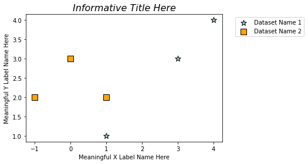
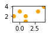

Homework 1#
This assignment is designed to be practice outside of in-class lab.
There are 5 sections. Please pick 5 problems from each section to complete (25 questions total).
Feel free to do more than 25!
Section 1: Basic Arithmetic#
Write code below to compute the following:
\(2^4-16+(\frac{288}{7})\)
\((10^2+13^4-12^3)^8\)
\(122^{1/2}-1980^{1/3}\)
\(3.14^{{3.14}^{3.14}}\)
\(\frac{3}{7}\cdot\frac{7}{5}\cdot\frac{3.14}{546}\)
\(456\cdot 32~ (mod~22)\)
\(100000\div 345~(mod~10)\)
\(15\cdot 14 \cdot 13 \cdots 3\cdot 2 \cdot 1\)
\((12345\cdot 67891011)^{1 / 12345}\)
Section 2: Statement Translation#
Translate the following statements in to code below.
If 5 is greater than \(x\), print ‘yes’.
\(y\) greater than 6 or \(y\) equal to \(x\)
\(a\) equal to \(b\) and \(a\) equal to \(c\)
If \(a\) equal to \(b\), then print \(c\).
For each of the first five integers, add them to a list entitled ‘contlist’.
For each element of ‘contlist’, print the number cubed.
If \(x\) is greater than \(a\), print \(b\). Otherwise, print \(x\) squared and set \(b\) equal to \(x\) squared.
Section 3: Output Prediction#
Without coding, what would the output of the following lines be? Briefly explain why that would be the output.
5 > 3( 10 < 24 ) & ( 10 > 4 )( 10 >= 24 ) and ( 10 > 4 )( 2 >= 4 ) | ( 2 >= 0 )x = 4 if x < 3: print(‘yes’) else: print(‘no’)x = 4 if x < 10: print(‘yes’) elif x < 9: print(‘no’)for i in [1,3,10]: i **= 2 print(i)for i in [1,3,10]: i **= 2 print(i)x = 4 x = 5 x = 6 print(x)
Explanations here (double-click or press enter to access the cell)
Section 4: Slicing, Indexing, & For-Loops#
Given the string
’homework’, use slicing in one line of code to print’hmwr’Given the tuple
(43, 42, 41, 40, 39), use slicing in one line of code to print(42, 39)Write a for-loop that prints
’success!’after the loop is done iterating.Use a for-loop to print of every multiple of 2 between 0 and 50.
Use a for-loop to find the minimum value of some list.
Write a for-loop that uses slicing to take larger and larger slices of a sequence. For example,
[1,2,3,4]going through the for-loop would produce[1],[1,2],[1,2,3], then[1,2,3,4].
Section 5: Functions#
For each of the following functions, pick a test input to verify your code works.
Write a function
underscore(list)that takes an input list of strings,list, and outputs one string with_between the previously separated elements. For example,[‘this’, ‘is’, ‘a’, ‘list’]would output’this_is_a_list’.Write a function
factorial(n)that takes input integernand outputs \(n!\) (recall \(n! = n\cdot (n-1)\cdot (n-2)\cdots 3\cdot 2\cdot 1\))Write a function
fibonacci(n)that takes input integernand computes the \(n\)-th Fibonacci number (recall the next Fibonacci number in the sequence is defined by adding the two previous terms: 0,1,1,2,3,5,8,13,…)Write a function that converts integers to base 2. For example, the number 17 in base 2 is 10001 since \(17 = 1\cdot 2^4+0\cdot 2^3+0\cdot 2^2+0\cdot 2^1+1\cdot 2^0\)
Write a function that converts a number into US standard money formatting (every 3 digits contain a comma and demical separates cents from dollar). That is, design a function that takes a number like \(123456789.10\) and outputs \( \$123,456,789.10\)
Write a function
reverse(seq)that takes an input sequenceseqand outputs the reversed version of the sequence.Write a function that adds up the elements in a given list.
Write a function that finds the maximum in a list of integers (without using any built-in maximum finding functions)
Homework 2#
This assignment is designed to be practice outside of in-class lab.
There are 2 sections. Please pick 10 problems from the first section to complete and 2 problems from the second section to complete (12 questions total).
Feel free to do more than 12!
Numpy, Math, & Sympy Libraries (Pick 10 Problems To Do)#
For the following, use the numpy, math, or sympy libraries to compute the answer.
Problems:#
Factor \(3x^3+51x^2+93x+45\)
Factor \(x^6+21x^5+175x^4+735x^3+1624x^2+1764x+720\)
Factor \(96x^3+224x^2+x+45\)
Simplify \(\frac{24x^{17}+12x^{16}+16x+8}{12x^{16}+8}\)
Simplify \(\frac{108x^{33}+54x^{32}+2x+1}{54x^{32}+1}\)
Simplify \(\frac{62x^{42}+31x^{41}+118x^2+589x+265}{31x^{41}+59x+265}\)
Calculate the sum of the squares of the first 1000 integers by squaring a 1000 element numpy array then summing the elements.
Generate 10 uniform random samples between 0 and 1 using
np.random.uniform()and calculate the mean. Repeat with 50, 100, 500, 1000, 5000 and 10000 samples. Do the means seem to approach a value or not? If so, what value?Generate 10 normal random samples between 0 and 1 using
np.random.normal(0, 1)and calculate the mean. Repeat with 50, 100, 500, 1000, 5000 and 10000 samples. Do the means seem to approach a value or not? If so, what value?Compute \(\cos(x)+\sin^4(x)+\sqrt{\tan(2 x)}\) for 100 points between \(0\) and \(\pi\)
Compute \(\sin^7(\pi x)+\cos^{3/2}(x)+\cot(x)\) for 100 points between \(0\) and \(2\pi\)
Compute \(\pi e^{\sqrt{x}}\) for 1000 points between \(0\) and \(2^{1/6}\)
Problem 29 from Project Euler:
Consider all integer combinations of \(a^b\) for \(2 \leq a \leq 5\) and \(2 \leq b \leq 5\): $\(\begin{array}{rrrr} 2^2=4, &2^3=8, &2^4=16, &2^5=32\\ 3^2=9, &3^3=27, &3^4=81, &3^5=243\\ 4^2=16, &4^3=64, &4^4=256, &4^5=1024\\ 5^2=25, &5^3=125, &5^4=625, &5^5=3125 \end{array}\)$
If they are then placed in numerical order, with any repeats removed, we get the following sequence of \(15\) distinct terms: $\(4, 8, 9, 16, 25, 27, 32, 64, 81, 125, 243, 256, 625, 1024, 3125.\)$
How many distinct terms are in the sequence generated by \(a^b\) for \(2 \leq a \leq 100\) and \(2 \leq b \leq 100\)?
Problem 40 from Project Euler:
An irrational decimal fraction is created by concatenating the positive integers: $\(0.12345678910{\color{red}1}112131415161718192021\cdots\)$
It can be seen that the \(12\)th digit of the fractional part is \(1\).
If \(d_n\) represents the \(n\)th digit of the fractional part, find the value of the following expression. $\(d_1 \times d_{10} \times d_{100} \times d_{1000} \times d_{10000} \times d_{100000} \times d_{1000000}\)$ 15. Problem 56 from Project Euler:
A googol (\(10^{100}\)) is a massive number: one followed by one-hundred zeros; \(100^{100}\) is almost unimaginably large: one followed by two-hundred zeros. Despite their size, the sum of the digits in each number is only \(1\).
Considering natural numbers of the form, \(a^b\), where \(a, b \lt 100\), what is the maximum digital sum?
Pandas, Matplotlib, & Networkx (Pick 2 Questions To Do)#
For the following problems, use pandas, matplotlib and/or networkx to solve them. If you do not have them downloaded from lab yet, you can access them here: click here for Datasets on GitHub.
For your plots, make sure:
You have an informative title and meaningful axis labels
If multiple datasets are on one plot, a legend with dataset indicators is shown
All relevant text is visible and legible
Your plot is an appropriate size
import matplotlib.pyplot as plt
For example, this is fantastic:
data1 = [[1, 3, 4], [0, 3, 2]]
data2 = [[1, 0, -1], [2, 3, 2]]
plt.scatter(data1[0], data1[0],
color='lightblue', marker='*', s = 100, edgecolors='black',
label='Dataset Name 1')
plt.scatter(data2[0], data2[1],
color='orange', marker ='s', s = 100, edgecolors='black',
label='Dataset Name 2')
plt.legend(bbox_to_anchor=(1.05, 1), loc='upper left')
plt.xlabel('Meaningful X Label Name Here')
plt.ylabel('Meaningful Y Label Name Here')
plt.title('Informative Title Here', fontsize=16, style='italic')
Text(0.5, 1.0, 'Informative Title Here')

And this is awful:
plt.figure(figsize=(1,.5))
plt.scatter(data1[0], data1[0], color='orange')
plt.scatter(data2[0], data2[1], color='orange')
<matplotlib.collections.PathCollection at 0x1a29397d348>

Somewhere in between the two plots above is great!
Problems:#
Consider the flower dataset (iris.csv):
Load the dataset using
pandasMake a scatter plot of sepal length against sepal width.
Are there any outliers?
Does there seem to be a relationship between the two?
Make a histogram of the variety of flowers.
Which is the most common variety?
Consider the dolphin network (DolphinNetwork.csv):
Load the dataset and convert it to a graph (you can use your Week 3 Day 4 Lab code)
Draw the network with nodes and edges colored to your choosing (not default).
Write your own function (not using a
networkxfunction) to calculate the number of triangles each dolphin appears inMake a bar chart with the x-axis corresponding to dolphins and y-axis corresponding to the dolphin’s triangle count
Which dolphin has the highest? The lowest?
What is the mean triangle count?
Consider the Titanic dataset (titanic.csv). The “Fare” column corresponds to the ticket price the individual paid. The “Ticket” column corresponds to the ticket number. Do the following:
Load the dataset using
pandasand print off the column names.What is the mean age? Median? Mode?
What is the mean fare? Median? Mode?
Print the name of the oldest person. Do the same with the youngest.
For the person who paid the most for their ticket, what was their ticket number? What was the ticket number of the cheapest ticket?
Plot a histogram of the fares with vertical lines corresponding to the mean and the median.
Consider the wine dataset (wine.csv):
Create an empty graph named
wineAdd a node for each of the wines in the dataset
If a wine shares a
Nonflavanoid phenolscount, add an edge between them inwineIf a wine shares a
Alcalinity of ashcount, add an edge between them inwinePlot the resulting network with node colors corresponding to
Classin the dataset
Homework 3#
This assignment is designed to be practice outside of in-class lab.
There are only two problems this time. Do both for full credit. Reach out with any questions!
Problem 1#
There is a new data set in the Datasets folder on GitHub called housing.csv. This dataset is a collection of information on houses in the Portland/Vancouver area (if you plot the latitude and longitude you can see the outline of the coast!).
Load the
housing.csvdataset from GitHub into your notebook (can be found: here)Using
numpy, built-in dataframe features, or functions you made in-lab, find the following for each column:Median
Mean
Mode
Standard Deviation
Variance
Mean Absolute Deviation
Plot the
priceagainstsqft_living. Do you see a relationship?Calculate the correlation between
priceagainstsqft_living. What does this value mean? Does it align with your answer to 3?Perform linear regression on
priceagainstsqft_living. Plot the regression line and data on the same plot.Compute your \(R^2\) statistic for the regression line.
Problem 2#
Recall the following result we discussed in Week 5 Day 5 Lab:
Let \(A\) be a symmetric matrix (\(A=A^T\)). Let \(R(A)=\frac{x^TAx}{x^Tx}\). Then, \(\min\limits_{x\neq 0}R(A)=\lambda_{\min}(A)\) and \(\max\limits_{x\neq 0}R(A)=\lambda_{\max}(A)\). Also, \(x\)’s that acheive these values are the eigenvectors.
Write a function that takes as an input a 2 by 2 matrix \(A\), finds \(\min\limits_{x\neq 0}R(A)\) and \(\max\limits_{x\neq 0}R(A)\) using scipy.optimize, then outputs \(|\lambda_{\min}(A)-\min\limits_{x\neq 0}R(A)|\) and \(|\lambda_{\max}-\max\limits_{x\neq 0}R(A)|\) where the eigenvalues are calculated using numpy.